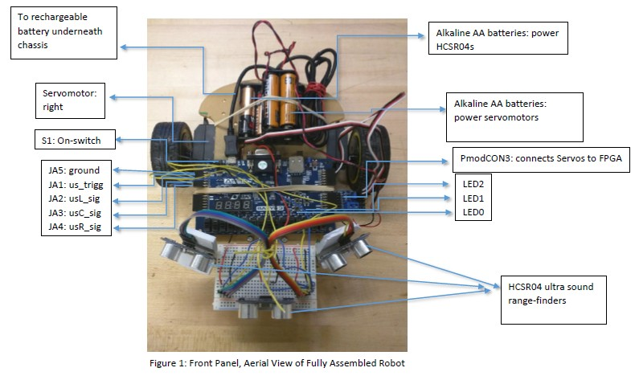
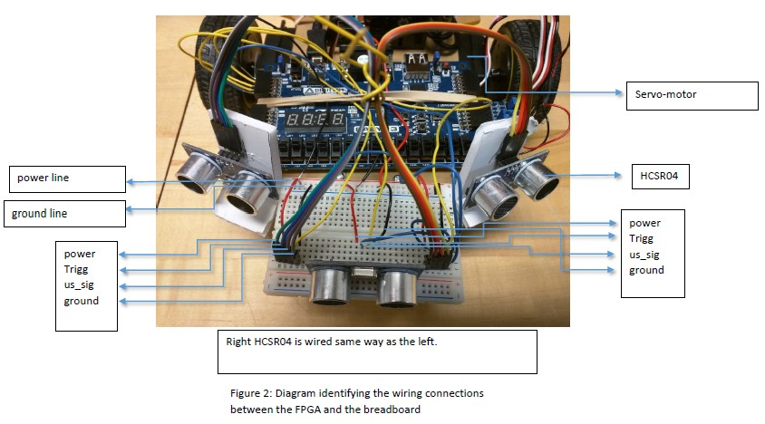
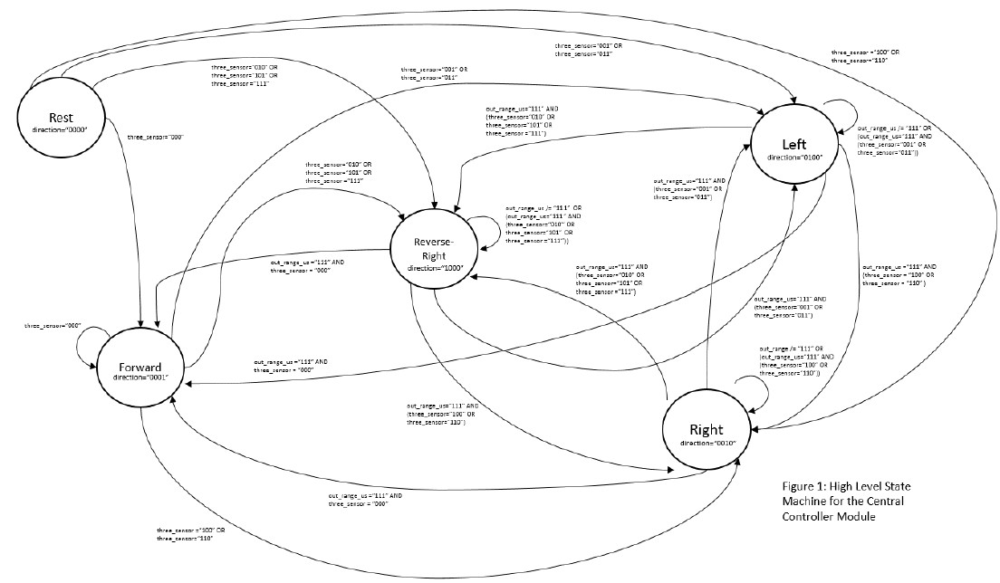

AOAR - Autonomous Obstacle Avoiding Robot
In this project, I iteratively designed an Autonomous Obstacle Avoiding Robot that autonomously detects obstacles by ultrasound sensors and avoids obstacles by moving multi-directionally via servomotors, using a free-programmable-gate-array (FPGA) coded by VHDL on VIVADO as the controller to interface between the ultrasound rangefinders and servomotors. I used a top-down, modular design and a bottom-up implementation approach, with rigorous testing conducted on each module using various digital tools (VIVADO, Digital Oscilloscope). Obstactle avoidance forms the fundamental basis of self-driving cars, as demonstrated by Waymo (Google/Alphabet Inc.)



